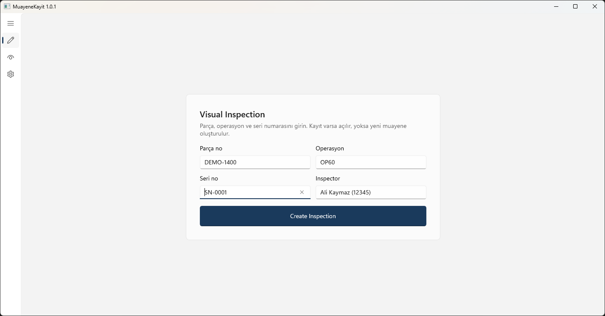
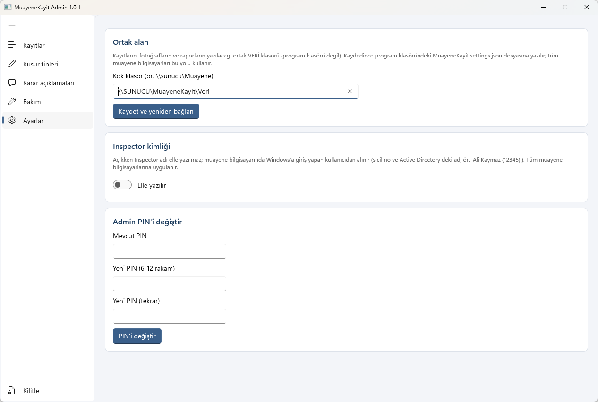

Görsel muayeneyi kağıttan ve Excel'den kurtarın.
MuayeneKayit, motor parçalarının görsel muayenesinde bulunan kusurları ölçümü, fotoğrafı ve kararıyla birlikte kaydeder, rework döngüsünü izler ve tek tıkla iki dilli (Türkçe / English) PDF rapor üretir. Kurulum, veritabanı ve internet gerekmez: program ve kayıtlar şirket ağındaki bir klasörde durur.

Ne yapar?
Muayeneci için hızlı veri girişi, mühendis için izlenebilir karar geçmişi, kalite için denetlenebilir kayıt.
Kusur ve ölçüm
Admin'in tanımladığı kusur tipleri (Dent, Nick, Scratch…) ve tipe özel ölçüm alanları. Derinlik, genişlik, uzunluk, çap, açı, renk ve Admin'den eklenen ek alanlar (ör. Yükseklik H). mm ya da inch.
Fotoğraf ve işaretleme
Kamera (C920, Surface arka kamera) ya da dosyadan fotoğraf. Kutu, daire, ok ve "#N" etiketi; isteğe bağlı arka plan kaldırma. Orijinal fotoğraf hiç değişmez.
Disposition ve rework
Accept, Rework, Reinspect, Repair, MRB, Return to vendor, Scrap. Rework sonrası "uygun / aynı kusur devam / yeni hata" ve bölge bazında sonuç; artış-azalış otomatik gösterilir.
High metal
Pozitif metal yığılması yan kusur olarak işaretlenir; yalnızca high metal için rework yapılabilir ve kalan ana kusur ayrıca karara gider.
İki dilli PDF rapor
Yatay A4, her fotoğraf ayrı sayfa, işaretler fotoğraf üzerinde, karar geçmişi ve ölçüm düzeltmeleri tablolarıyla. Rapor sürümlenir (v1, v2…).
Admin paneli
Programın içinde, PIN korumalı: kusur tipleri, ek ölçüm alanları, karar açıklamaları, tüm kayıtlar ve CSV, kilit bakımı, veri klasörü.
Dashboard
Parça → operasyon → seri → kusur ağacı; parça, seri, hata tipi ve duruma göre süzme. Açık kusuru olan seriler öne çıkar.
Eşzamanlı çalışma
Birden çok muayeneci aynı ağ klasörüne yazar; dosya kilitleri ve atomik yazma kayıt bozulmasını önler.
Bir muayenenin akışı
Ekran her an sıradaki işi vurgular; tamamlanan adımlar ✓ alır. Renk yalnızca dikkat gereken yerde kullanılır.
Muayeneyi aç
Parça, operasyon, seri no. Önceki kayıtlardan öneri gelir.
Kusur ekle
Tipi seç; şablondaki ölçüm kutuları açılır.
Ölç
Değerler otomatik kaydedilir, her düzeltme geçmişe yazılır.
Fotoğrafla
Kamera çerçevesi kusur kutusu olur; işaretle.
Karar ver
Disposition; rework ise sonuç sonra girilir.
Rapor ve kapanış
PDF rapor; açık kusur kalmayınca muayene tamamlanır.
| Durum | Ne demek |
|---|---|
| Açık | Ölçüm, fotoğraf ya da karar bekliyor. |
| Rework sonrası muayene bekliyor | Ölçümler kilitli; parça geldiğinde sonuç girilir. |
| MRB bekliyor | Parça akışta ilerleyebilir, muayene MRB kararına kadar kapanmaz. |
| Kapandı | Accept, MRB kabul, rework sonrası uygun ya da Scrap. |
| Void | Yanlış giriş; kayıt silinmez, gerekçesiyle geçersiz sayılır. |
Ekranlar
Görüntüler demo verisiyle alınmıştır.




Kurulum
Program bir ağ klasörüne kopyalanır, kullanıcılar masaüstü kısayoluyla açar. Hiçbir bilgisayara bir şey kurulmaz.
1. Paketi indir ve kopyala
Releases sayfasından MuayeneKayit-<sürüm>.zip'i indirip ağdaki program klasörüne açın:
\\sunucu\MuayeneKayit\Program\
MuayeneKayit.exe ← herkes bunu açar
surum.txt ← açılacak sürüm (ör. 1.0.2)
1.0.2\Inspector-x64\
1.0.2\Inspector-arm64\
MuayeneKayit.settings.json ← veri klasörünün yolu2. Veri klasörünü göster
MuayeneKayit.settings.example.json'ı MuayeneKayit.settings.json olarak kopyalayıp yolu yazın:
{ "rootPath": "\\\\sunucu\\MuayeneKayit\\Veri" }Muayeneciler Veri klasörüne okuma + yazma, Program ve Veri\_config klasörlerine yalnızca okuma iznine sahip olmalı.
3. Admin'i hazırla
Programı açın, sol menünün altındaki Admin'e tıklayın, ilk açılışta PIN belirleyin. Kusur tiplerini, ek ölçüm alanlarını ve karar açıklamalarını düzenleyip kaydedin.
4. Kullanıcılara kısayol
Ağdaki MuayeneKayit.exe → sağ tık → Gönder → Masaüstü (kısayol oluştur). Surface ARM64 cihazlar ARM64 sürümünü kendiliğinden açar.
Güncelleme
Yeni sürüm klasörünü (ör. 1.0.3) Program klasörüne kopyalayın, sonra surum.txt'yi değiştirin. Açık programlar eski sürümde çalışmaya devam eder, bir sonraki açılışta yeni sürüm gelir.
Kaynaktan derleme
| Gereken | Not |
|---|---|
| Visual Studio 2022 (17.12+) | İş yükleri: .NET masaüstü geliştirme ve WinUI uygulama geliştirme |
| .NET 9 SDK | Visual Studio ile gelir |
| Windows App SDK 1.8 | NuGet paketi olarak ilk derlemede iner |
git clone https://github.com/Akaymaz2635/MuayeneKayit.git
cd MuayeneKayit
dotnet run --project tests\MuayeneKayit.Tests # testler
.\build-release.ps1 # dist\MuayeneKayit-<sürüm>.zipGüvenlik ve izlenebilirlik
Program dış bağlantı kurmaz; telemetri ve otomatik güncelleme yoktur. Kayıtlar yalnızca sizin ağ klasörünüzde durur.
Silinmeyen geçmiş
Kararlar yalnızca eklenir; geri alma ve void de birer kayıttır. Ölçüm düzeltmeleri önce / sonra değerleriyle saklanır.
Denetim kaydı
Her işlem kim, ne zaman, ne yaptı bilgisiyle SHA-256 zincirli bir günlüğe yazılır; bozulma bakım ekranında raporlanır.
PIN korumalı admin
PIN yalnızca tuzlu PBKDF2-SHA256 özeti olarak saklanır; yanlış denemeler kilitlenir ve kayda geçer.
Test edilmiş
Fonksiyonel ve güvenlik test planları ile sonuç raporları docs/test altındadır.